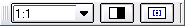

|
||
 |
||


8 Printing
To print a drawing with QCad, you need to specify a scale factor for the printout. This can be 1:1 or any other desired scale. It's highly recommended to activate the print preview before actually printing a drawing. In the print preview you can adjust the scale factor and position the drawing on the paper.
Print Preview
Toolbar:
Menu:
File - Print Preview
Options Toolbar:

Opens a print preview window for the current drawing. The print preview shows how your drawing will look in the printout. Use the combo box in the options toolbar to adjust the scaling. The button in the middle toggles the black/white mode. When enabled all lines will appear black on the drawing rather than colored or gray. Use the button at the right to automatically center the drawing on the paper. You can also move the paper around by dragging it with the left mouse button.
{kind=link}
Figure 11: Print Preview.
Toolbar:
Menu:
File - Print
Hotkey:
Ctrl-P
Use this command to print a drawing out of the print preview. A setup dialog is shown before anything is printed. Use this dialog to choose a printer. You can also still alter the paper format at this stage. This is not recommended however. The paper format can be changed in the drawing options before printing. If you change the paper format at this stage, the printout will not match the print preview.
Printing to Files
You can check "Print to file" in the printer setup dialog to create a
file instead of actually printing on paper. Under Unix systems and
Max OS X, this creates a Postscript file. Under Windows a raw binary
print file is created (PRN). This file is printer dependent. To
create PS files under Windows, please install a Postscript printer
driver such as "APS-PS".
PS files can be easely converted to PDF files using a socalled distiller
such as ps2pdf or Acrobat Distiller.
|